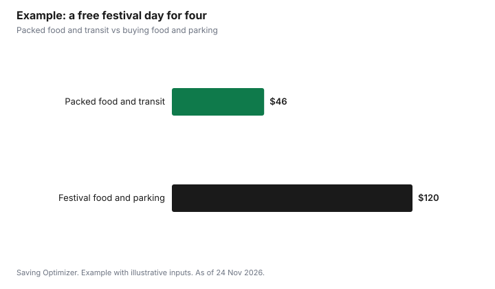

Entertainment · Canada
Free Summer Festivals: A Canadian Cost Guide

Many Canadian summer festivals have free stages, so a day out can cost little beyond food and transit. In 2026, about two-thirds of the more than 350 shows at the Montreal Jazz Festival were free, Just for Laughs Montréal ran free outdoor shows, and TIFF's Festival Street on King Street was free from 10 to 13 September. Check your city's event calendar each spring, and plan food, transit and parking, which are the real costs.
Key takeaways
- Montreal Jazz Festival 2026 (25 June to 4 July): more than 350 shows, about two-thirds free, per the Government of Canada's funding release.
- Just for Laughs Montréal 2026 ran 15 to 26 July with free outdoor shows alongside ticketed ones.
- TIFF Festival Street on King Street was free from 10 to 13 September 2026.
- Find local events through city, library and tourism calendars, and sign up for their newsletters in spring.
- Example: a family's free festival day costs $46 with packed food and transit, against $120 buying food there and parking.
Examples
| Festival | 2026 dates | Free part |
|---|---|---|
| Festival International de Jazz de Montréal | 25 June to 4 July | About two-thirds of 350+ shows |
| Just for Laughs Montréal | 15 to 26 July | Free outdoor shows |
| TIFF Festival Street, Toronto | 10 to 13 September | Free street festival on King St. |
Finding events
- City event calendars and parks departments list free concerts, movie nights and cultural days.
- Provincial tourism sites list larger festivals.
- Libraries and community centres post local events.
- Follow festivals' newsletters for lineups and free-stage schedules.
- Canada Day and other holiday events are usually free; see our free holiday entertainment guide.
Hidden costs
- Food and drinks at festival prices. Bring water and snacks where allowed.
- Parking and road closures. Transit or cycling is often cheaper and faster.
- Merch and vendor booths. Set a budget before you go.
- Paid upgrades, such as reserved seating or VIP areas. Free stages are often enough.
- Sun and rain gear. Bring it from home instead of buying it there.
Plan: an example family day
These are example amounts, not quotes. A family of four goes to a free festival. Option 1: they pack food and water ($20) and take transit ($26 return). Option 2: they buy food there ($80) and park ($40).

Option 1: $20 + $26 = $46. Option 2: $80 + $40 = $120. The music is the same; the plan saves $74. If you want a paid headliner too, compare passes with our early bird festival pass guide.
Sources
- Canadian Heritage news release, 25 June 2026: Government of Canada supports the 46th Festival International de Jazz de Montréal (350+ performances, two-thirds free), checked 24 Nov 2026.
- Just For Laughs Montréal festival page (15-26 July 2026) and Tourisme Montréal (outdoor shows), checked 24 Nov 2026.
- TIFF, About TIFF '26 (Festival 10-20 Sept 2026; Festival Street), checked 24 Nov 2026.
Frequently asked questions
Is the Montreal Jazz Festival free?
Much of it is. In 2026, about two-thirds of the more than 350 shows were free, according to the Government of Canada's funding announcement. Headline indoor shows are ticketed.
Does Just for Laughs have free shows?
Yes. Just for Laughs Montréal 2026 ran from 15 to 26 July with free outdoor shows as well as ticketed shows.
Is TIFF free?
Screenings are ticketed, but TIFF's Festival Street on King Street West was free from 10 to 13 September 2026.
How do I find free festivals near me?
Check your city's event calendar, provincial tourism sites, your library and festival newsletters each spring.
What costs should I budget for at a free festival?
Food, drinks, transit or parking, merch and gear. Packing food and taking transit keeps a free festival close to free.
Researched and drafted with AI assistance and fact-checked against official Canadian sources. How we create content.
Note: Dates and free programming change each year. Check the festival's site. Education only.